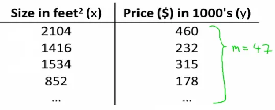
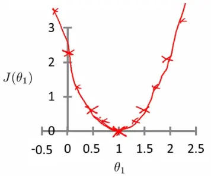
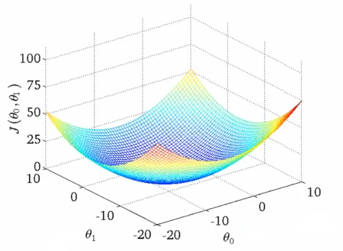
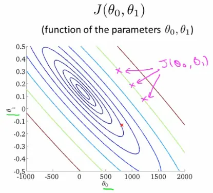
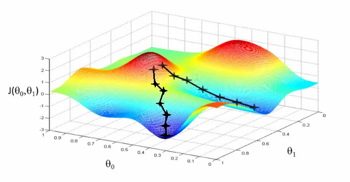
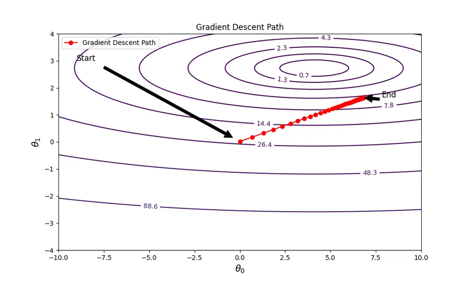
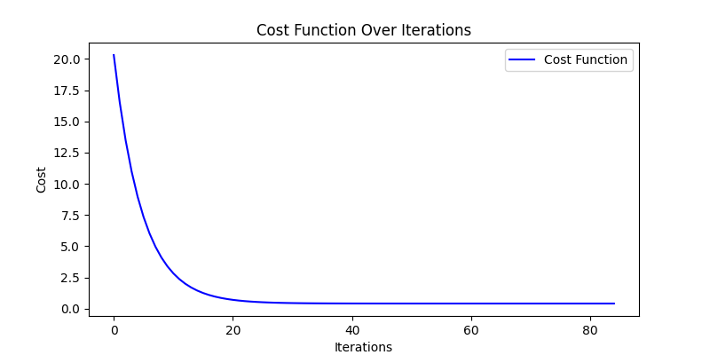
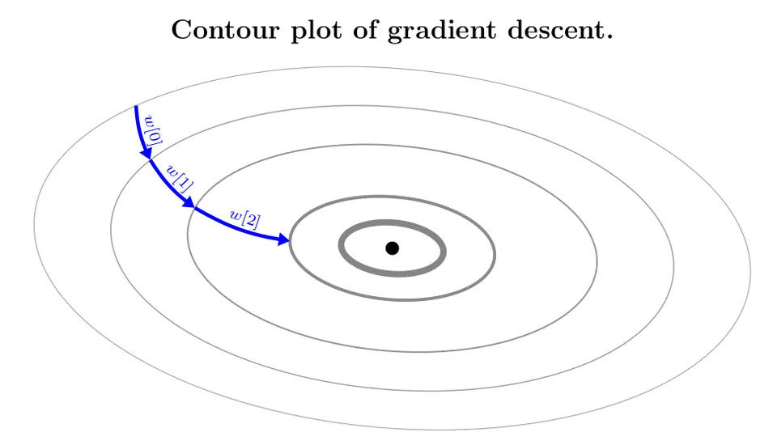
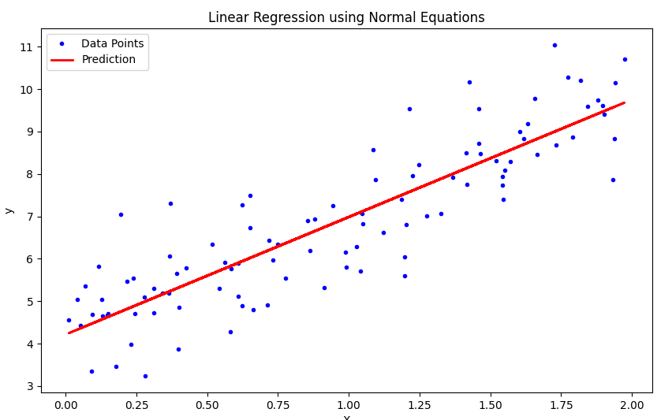

Linear Regression is a fundamental type of supervised learning algorithm in statistics and machine learning. It's utilized for modeling and analyzing the relationship between a dependent variable and one or more independent variables. The goal is to predict continuous output values based on the input variables.
The hypothesis function in linear regression is given by:
$$ h_{\theta}(x) = \theta_0 + \theta_1x $$
where:
The cost function in linear regression measures how far off the predictions are from the actual outcomes. It's commonly represented as:
$$ J(\theta_0, \theta_1) = \frac{1}{2m} \sum_{i=1}^{m}(h_{\theta}(x^{(i)}) - y^{(i)})^2 $$
This is the mean squared error (MSE) cost function, where:
To find the optimal parameters ($\theta_0$ and $\theta_1$), we use gradient descent to minimize the cost function. The gradient descent algorithm iteratively adjusts the parameters to reduce the cost.
Using linear regression, we can predict house prices based on house size.

Different values of $\theta_1$ yield different cost (J) values:
Optimization aims to find the value of $\theta_1$ that minimizes $J(\theta_1)$.

In linear regression, the cost function $J(\theta_0, \theta_1)$ is a critical component, involving two parameters: $\theta_0$ and $\theta_1$. Visualization of this function can be achieved through different plots.
The 3D surface plot illustrates the cost function where:

Contour plots offer a 2D perspective:

The gradient descent algorithm iteratively adjusts $\theta_0$ and $\theta_1$ to minimize the cost function. The algorithm proceeds as follows:
θ = [0, 0]
while not converged:
for j in [0, 1]:
θ_j := θ_j - α ∂/∂θ_j J(θ_0, θ_1)
Here is a complete Python code that generates mock data and implements the gradient descent algorithm to fit a linear regression model. The code also includes plotting the cost function and the path taken by the gradient descent algorithm.
import numpy as np
import matplotlib.pyplot as plt
# Generate mock data
np.random.seed(42)
X = 2 * np.random.rand(100, 1)
y = 4 + 3 * X + np.random.randn(100, 1)
# Feature normalization
X_mean = np.mean(X)
X_std = np.std(X)
X_norm = (X - X_mean) / X_std
# Add bias term (X0 = 1)
X_b = np.c_[np.ones((100, 1)), X_norm]
# Initialize parameters
theta = np.random.randn(2, 1) * 0.01
alpha = 0.1
n_iterations = 1000
m = len(X_b)
tolerance = 1e-7
# Cost function
def compute_cost(theta, X_b, y):
return (1 / (2 * m)) * np.sum((X_b.dot(theta) - y) ** 2)
# Gradient Descent
cost_history = []
theta_history = [theta]
for iteration in range(n_iterations):
gradients = (1 / m) * X_b.T.dot(X_b.dot(theta) - y)
theta = theta - alpha * gradients
cost = compute_cost(theta, X_b, y)
cost_history.append(cost)
theta_history.append(theta.copy())
if len(cost_history) > 1 and np.abs(cost_history[-1] - cost_history[-2]) < tolerance:
break
# Prepare data for contour plot
theta_0_vals = np.linspace(-10, 10, 100)
theta_1_vals = np.linspace(-4, 4, 100)
cost_vals = np.zeros((len(theta_0_vals), len(theta_1_vals)))
for i in range(len(theta_0_vals)):
for j in range(len(theta_1_vals)):
theta_ij = np.array([[theta_0_vals[i]], [theta_1_vals[j]]])
cost_vals[i, j] = compute_cost(theta_ij, X_b, y)
# Plotting
fig, ax = plt.subplots(figsize=(10, 6))
# Contour plot
theta_0_vals, theta_1_vals = np.meshgrid(theta_0_vals, theta_1_vals)
CS = ax.contour(theta_0_vals, theta_1_vals, cost_vals, levels=np.logspace(-2, 3, 20), cmap='viridis')
ax.clabel(CS, inline=1, fontsize=10)
# Plot the path of the gradient descent
theta_history = np.array(theta_history)
ax.plot(theta_history[:, 0], theta_history[:, 1], 'r-o', label='Gradient Descent Path')
# Annotate the start and end points
ax.annotate('Start', xy=(theta_history[0, 0], theta_history[0, 1]), xytext=(-9, 3),
arrowprops=dict(facecolor='black', shrink=0.05), fontsize=12, color='black')
ax.annotate('End', xy=(theta_history[-1, 0], theta_history[-1, 1]), xytext=(theta_history[-1, 0] + 1, theta_history[-1, 1]),
arrowprops=dict(facecolor='black', shrink=0.05), fontsize=12, color='black')
ax.set_xlabel(r'$\theta_0$', fontsize=14)
ax.set_ylabel(r'$\theta_1$', fontsize=14)
ax.set_title('Gradient Descent Path')
ax.legend()
plt.show()
# Plot cost function
plt.figure(figsize=(8, 4))
plt.plot(cost_history, 'b-', label='Cost Function')
plt.xlabel('Iterations')
plt.ylabel('Cost')
plt.title('Cost Function Over Iterations')
plt.legend()
plt.show()Below is the gradient descent path:

And here is the cost function over iterations:

At this point, the derivative equals zero, implying no further changes in $\theta_1$:
$$ \alpha \times 0 = 0 \Rightarrow \theta_1 = \theta_1 - 0 $$

Through gradient descent, the optimal $\theta_0$ and $\theta_1$ values are identified, minimizing the cost function and enhancing the linear regression model's performance.
In linear regression, gradient descent is applied to minimize the squared error cost function $J(\theta_0, \theta_1)$. The process involves calculating the partial derivatives of the cost function with respect to each parameter $\theta_0$ and $\theta_1$.
The gradient of the cost function is computed as follows:
$$\frac{\partial}{\partial \theta_j} J(\theta_0, \theta_1) = \frac{\partial}{\partial \theta_j} \frac{1}{2m} \sum_{i=1}^{m} (h_{\theta}(x^{(i)}) - y^{(i)})^2$$
$$= \frac{\partial}{\partial \theta_j} \frac{1}{2m} \sum_{i=1}^{m} (\theta_0 + \theta_1x^{(i)} - y^{(i)})^2$$
The partial derivatives for each $\theta_j$ are:
$$\frac{\partial}{\partial \theta_0} J(\theta_0, \theta_1)=\frac{\partial}{\partial \theta_0} \frac{1}{m} \sum_{i=1}^{m} (h_{\theta}(x^{(i)}) - y^{(i)})$$
$$\frac{\partial}{\partial \theta_1} J(\theta_0, \theta_1)=\frac{\partial}{\partial \theta_1} \frac{1}{m} \sum_{i=1}^{m} (h_{\theta}(x^{(i)}) - y^{(i)})x^{(i)}$$
For solving the minimization problem $\min J(\theta_0, \theta_1)$, the normal equations method offers an alternative to gradient descent. This numerical method provides an exact solution, avoiding the iterative approach of gradient descent. It can be faster for certain problems but is more complex and will be covered in detail later.
Below is the Python code to generate mock data and solve the minimization problem (\min J(\theta_0, \theta_1)) using the normal equations method.
import numpy as np
import matplotlib.pyplot as plt
# Generate mock data
np.random.seed(42)
X = 2 * np.random.rand(100, 1)
y = 4 + 3 * X + np.random.randn(100, 1)
# Add bias term (X0 = 1)
X_b = np.c_[np.ones((100, 1)), X]
# Normal Equations method
theta_best = np.linalg.inv(X_b.T.dot(X_b)).dot(X_b.T).dot(y)
# Display the results
print(f"Theta obtained by the Normal Equations method: {theta_best.ravel()}")
# Plotting the results
plt.figure(figsize=(10, 6))
plt.plot(X, y, 'b.', label='Data Points')
plt.plot(X, X_b.dot(theta_best), 'r-', label='Prediction', linewidth=2)
plt.xlabel('X')
plt.ylabel('y')
plt.title('Linear Regression using Normal Equations')
plt.legend()
plt.show()np.random.seed(42) to ensure reproducibility of the results.
The linear regression model can be extended to include multiple features. For example, in a housing model, features could include size, age, number of bedrooms, and number of floors. However, a challenge arises when dealing with more than three dimensions, as visualization becomes difficult. To effectively manage multiple features, linear algebra concepts like matrices and vectors are employed, facilitating calculations and interpretations in higher-dimensional spaces.
These notes are based on the free video lectures offered by Stanford University, led by Professor Andrew Ng. These lectures are part of the renowned Machine Learning course available on Coursera. For more information and to access the full course, visit the Coursera course page.